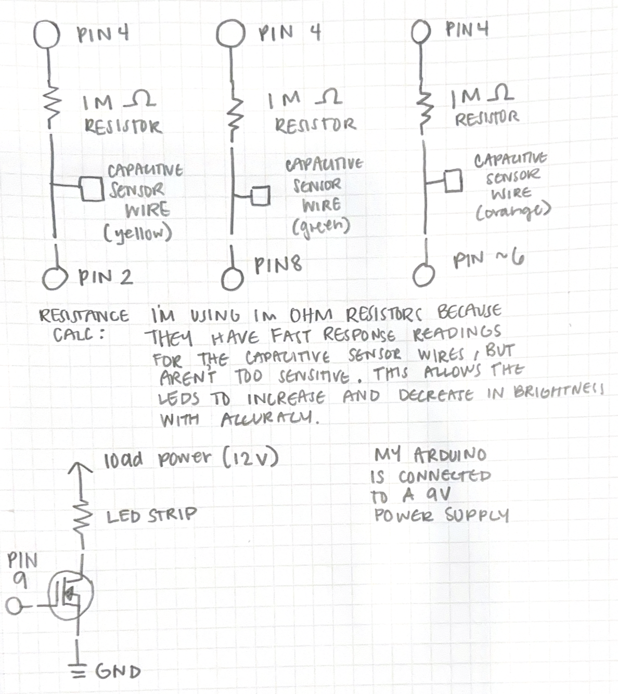

Schematic
Image of my schematic for the circuit & resistance calculation.
'Higher Voltage!' Circuit Documentation

This is my 'Higher Voltage!' circuit. The breadboard is connected to the Arduino with:
- Red wire associated with yellow wire → pin 2
- Red wrie associated with all resistors → pin 4
- Red wire associated with green wire → pin 8
- Red wire associated with orange wire → pin ~6
- White wire connected to MOSFET → pin ~9
- Black wire → GND
Code
// This uses 3 capactitive touch sensors connected with 10M resistors to detect when touched. When a sensor is activated,
// the led light strip will change in brightness.
// - Sensor 1 (yellow wire connected to pin 2) : increases brightness by 10
// - Sensor 2 (orange wire connected to pin 8) : decreases brightness by 10
// - Sensor 3 (green wire connected to pin ~6) : sets brightness to 0
#include
int ledPin = 9; // PWM connected to N-MOSEFT, controls 12v LED strip
// Capacitive sensors
CapacitiveSensor cs_4_2 = CapacitiveSensor(4,2); // 1M resistor between pins 4 & 2, pin 2 is sensor pin, add a wire and or foil if desired
CapacitiveSensor cs_4_8 = CapacitiveSensor(4,8); // 1M resistor between pins 4 & 8, pin 8 is sensor pin, add a wire and or foil
CapacitiveSensor cs_4_6 = CapacitiveSensor(4,6); // 1M resistor between pins 4 & 6, pin 6 is sensor pin, add a wire and or foil
int brightness = 0; // LED brightness
int touch_change = 10; // amount to increase or decrease the brightness per touch
void setup() {
Serial.begin(9600); // start serial
pinMode(ledPin, OUTPUT); // set LED pin as output so it sends voltage to MOSFET
// turn off autocalibrate for all sensors
cs_4_2.set_CS_AutocaL_Millis(0xFFFFFFFF);
cs_4_8.set_CS_AutocaL_Millis(0xFFFFFFFF);
cs_4_6.set_CS_AutocaL_Millis(0xFFFFFFFF);
}
void loop() {
// reads capacitive sensor values with sample window 30
long total1 = cs_4_2.capacitiveSensor(30);
long total2 = cs_4_8.capacitiveSensor(30);
long total3 = cs_4_6.capacitiveSensor(30);
Serial.print(total1); Serial.print("\t"); // print sensor output 1
Serial.print(total2); Serial.print("\t"); // print sensor output 2
Serial.println(total3); // print sensor output 3
// if sensor 1 is touched (value exceeds the threshold), increase brightness
// I determined threshold value of 1000 through serial monitor testing
if(total1> 1000){
brightness = min(brightness + touch_change, 255);
}
// if sensor 2 is touched, decrease brightness
if(total2 > 1000){
brightness = max(brightness - touch_change, 0); // decreases brightness but no below value 0
}
// if sensor 3 is touched, reset brightness to 0
if(total3 > 1000){
brightness = 0;
}
// applies the brightness to the LED strip through PWM
analogWrite(ledPin, brightness);
delay(50); // gives time to reset
}
Operation Video
Video of my circuit in action.
Questions
Question 1
The absolute maximum amount of current between pin 2 and pin 3 is:
- Continuous Drain Current: 37.2 A
- Pulsed Drain Current: 80 A
Question 2

Question 3

//motor A pins
motorAforward = 2;
motorAbackward = 3;
motorAon = 9; //enable pin
//motor B pins
motorBforward = 4;
motorBbackward = 5;
motorBon = 10; //enable pin
//setup function
pinMode(2, OUTPUT);
pinMode(3, OUTPUT);
pinMode(4, OUTPUT);
pinMode(5, OUTPUT);
// use analogWrite function on enable pins to set motors to medium speed
//motors forward
digitalWrite(2, HIGH);
digitalWrite(3, LOW);
digitalWrite(4, HIGH);
digitalWrite(5, LOW);
delay
//motors backward
digitalWrite(2, LOW);
digitalWrite(3, HIGH);
digitalWrite(4, LOW);
digitalWrite(5, HIGH);
delay
//one forward, one backward
digitalWrite(2, HIGH);
digitalWrite(3, LOW);
digitalWrite(4, LOW);
digitalWrite(5, HIGH);
delay
//one back then one forward
digitalWrite(2, LOW);
digitalWrite(3, HIGH);
digitalWrite(4, HIGH);
digitalWrite(5, LOW);
delay
Question 4
No AI used to complete the assignment.